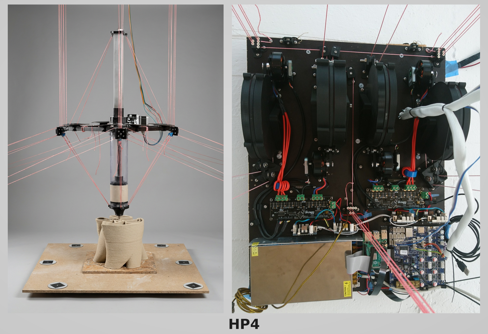
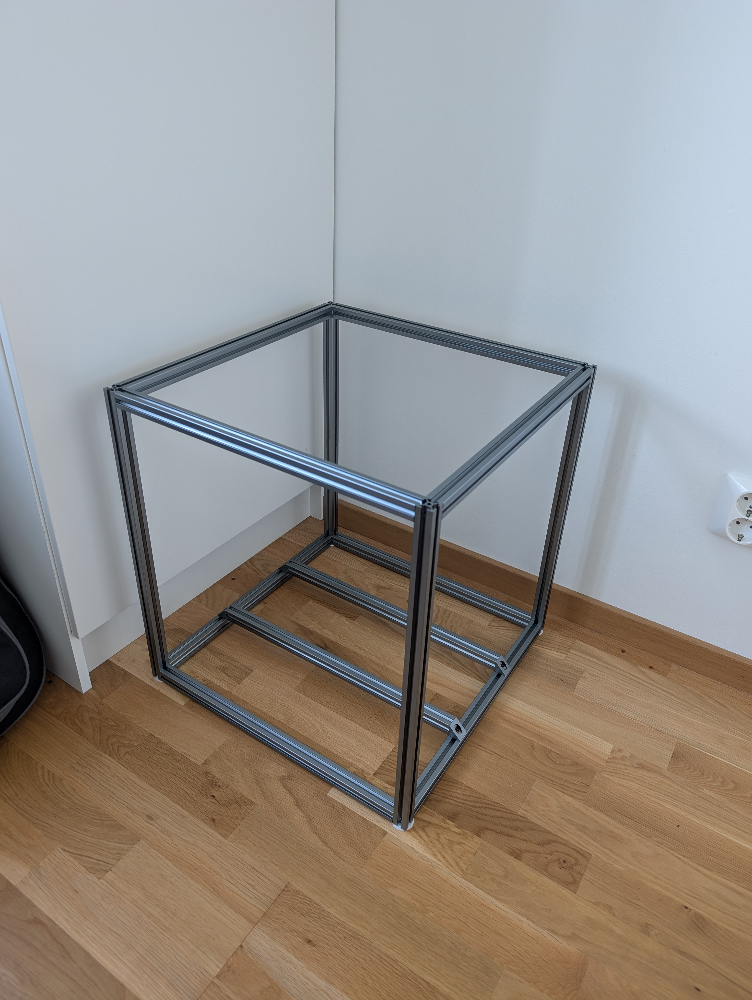
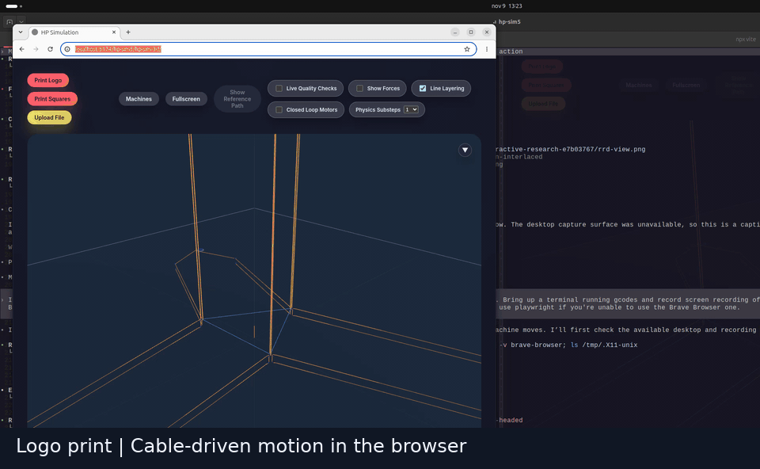
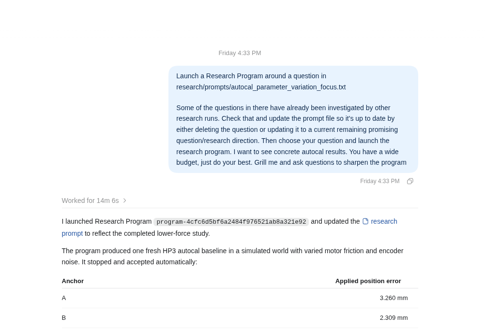
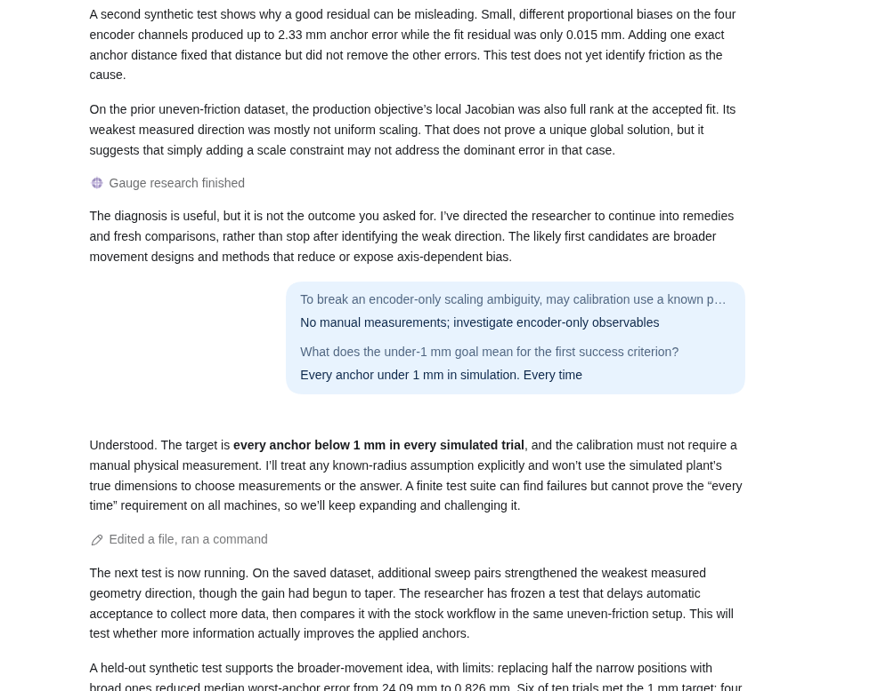
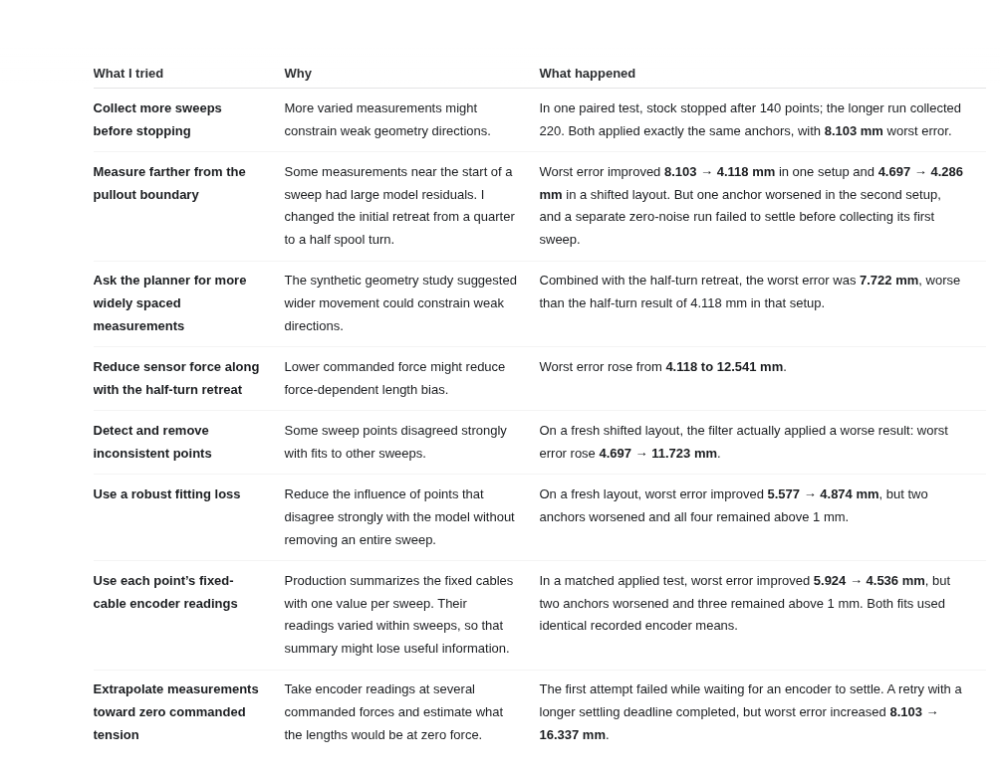

Hangprinter State of the Art
Updated November 9, 2026
Hangprinter is a cable-driven 3D printer and robotics project. We're working toward cable driven machines that are cheap, reliable, and easy to build.
The project currently has a documented full-size but somewhat old and underdeveloped machine design (HP4), and a range of very advanced software projects related to most aspects of cable driven robotics.
The latest software developments focus on:
- a physics simulator, and
- an AI-assisted research system.
Thre research system is being used to tackle remainig software challenges, like one-click calibration with minimal hardware.
The latest hardware developments focus on prototyping two reference hardware projects:
In short, after developing HP4 i 2018-2020, I've switched from developing full designs all at once to developing and testing building blocks separately.
Where To Start For Builders
HP4 is the established full-size Hangprinter design. It remains the starting point for anyone wanting to build an existing Hangprinter and is documented at the HP4 documentation page.

Shortcomings
The current HP4 design was developed and tested as a prototype machine. It's fully functional but was meant to be followed by an equivalent design with cheaper more modern electronics. The more streamlines "HP4.1" design was planned in detail but never executed upon, as I (tobben) shifted my personal focus to more fundamental problems within cable driven robotics.
Machines and hardware building blocks
The work on RefWinch has made clear the need for reliable odometry. So the RefWinch project has included a lot of work on odometry.
A separate drag-wire encoder, measuring distance with its own separate wire in each direction of travel, is my (tobben's) current favorite idea, after having failed at making other odometry ideas reliable enough. But the drag-wire implementation remains at the sketch level in November 2026.
Shortcomings
A RefRig frame has been built out of openbeams. A more complete physical RefRig build depends on RefWinches to exist first.

RefWinch will be a tool for bridging the sim2real gap, and simulated RefRigs should be easy to prototype. The work with simulated RefWinches has not yet started.
Firmware and motion transform building blocks
Stock ReprapFirmware and my (tobben's) fork of Klipper has extensive support for (translational) cable driven robotics thanks to our work.
ReprapFirmware supports up to 8 anochors, and Klipper supports 26 anchors. Anchors can now be put in any configuration. So Hangprinter is no longer constrained to the old three-low, one-high configuration that older Hangprinters version 4 and earlier were bound to.
The quadratic forward transform is state-of-the art in terms of accuracy and performance. It was selected after comparisons with other methods across several simulated cable robot geometries.
QP and Tikhonov style flex compensation algorithms estimate cable tensions and compensate for elastic stretch. They are imperfect approximationas because they rely on two simplified assumptions:
- That lines act like linear springs, and
- that lines are connected to a central point mass.
Despite that, they're very practical because they work with any anchor number and placements, and they use much less processor power than previous compensation algorithms. This enables us to use cheaper electronics. Especially the QP one works better for Hangprinter than everything else I could find in literature.
Shortcomings
Klipper still lacks direct driver-controller communication, so torque mode and encoder readings remain unavailable in Klipper.
Rotational DOF and cable sag effects has remained out of scope for the Hangprinter Project.
IMU measurements has also remained untested in practice, although some firmware support is inherited from general firmware features like input shaping. Stock input shaping fetures are not expected to work well for cable driven robots, so work remains there for those who want to do input shaping-like vibration compensation with Hangprinter.
Working software features do not mean everything's tested end-to-end on hardware. Expect minor software bugs to turn up during early test, both unrelated to, and related to the specific thing you want to test. Calibration is also a separate concern adressed later.
Physics simulation building blocks
hp-sim5 simulates cables, motors, spools, machine geometry, and firmware behavior.
It includes interactive 2D and 3D simulations, as well as headless experiments using a native Rust physics engine. Experiments can record measurements and motion histories for later inspection with Rerun.

A particularly useful capability is running real firmware against simulated machine physics, in both batched and interactive modes. This lets both humans and AI agents investigate control and calibration methods before trying them on hardware.
Shortcomings
Simulation performance remains an issue for machines who does lots of block-and-tackle style gearing. It's also still hard to simulate friction correctly in such machines.
We're very lucky that Nvidia's new Newton physics engine soon includes a cable simulation strategy very similar to hp-sim5's. We borrowed it from Nvidia's researchers in the first place, so this is expected.
They first pre-released their version on November 4, 2026, which is only 5 days agon at time of writing, and so their work remains to be folded back into hp-sim5's engine. But we should expect at least some of our cable simulation shortcomings to be mitigated soon.
Primary sources is Newton's new docs on the subject and the PR that merges "massless tendons" into Newton. We're getting awesome info from eg this report and this requirements document.
Automated research building blocks
A major recent development is that hp-sim5 can now run AI-assisted Research Programs, and it can run in a repeatable environment on OpenAI's cloud.
OpenAI cloud environments are shareable, which means anyone with an OpenAI subscription can get a full Hangprinter development environment set up with one click. They can then ask a research question in natural language and have implementations and rigorous numerical experimentation served.
It's like a support bot on steroids. Instead of asking me of my opinion on an idea, people can ask the automated research manager first. So by the time they ask me (if they still want to talk to me), they have a working first implementation and a report on extensive numerical testing of their idea and implementation. All this with almost no effort or prior knowledge about Hangprinter required. All in a chat. Almost no setup. Costs nothing extra for those who already have OpenAI subscriptions.



A Research Program currently has three complementary roles:
- Research manager: Chooses research questions, delegates investigations, and coordinates results.
- Researcher: Develops hypotheses, runs experiments, investigates failures, and proposes improvements. Can be launched independently by the user if desired.
- Reviewer:Independently examines the evidence and proposed changes before they are accepted.
Research results include reports, original measurements, and supporting evidence. Useful code changes can be tested and integrated into the project.
The goal is not simply to generate more code. It's to make experimental research faster, more systematic, and easier to check. The driving idea behind the "Automated Researcher" has been to write down how I (tobben) works and have an agent do that instead. The driving idea behind the "Automater Research Manager" has been to write down how I work with managing the now "automated researchers", commanding them, gathering their work, reviewing it etc, and to have an agent do that instead as well. There are turtles all the way down.
The Research Program feature is operational but still under development. Its reliability, scientific usefulness, and ability to carry investigations through to completed changes are themselves being tested.
Shortcomings
It's obviously not ideal to be tied to OpenAI subscriptions. Work is underway to extend the principle to private computers and servers, like VPS services. These cost much more money than OpenAI Codex cloud servers but are more flexible and predictable.
Also, in the OpenAI Cloud I've not been able to reliably run several simulators in parallel. We only get 2 cores anyway so I didn't bother making parallelism work there yet.
A bigger shortcoming/challenge is that it's very hard to quantify how good the automated research programs really are since double blind tests would be prohibitively expensive to conduct. Also, the lack of real RefRigs to test on leaves the sim2real gap unresearched, which makes the generated research less tested and interested than it could have been.
It's all very new and will change quite frequently, due to new models and best-pracices being constantly released, and partly because the research program is more than capable of improving itself.
I expect systems like these to become better and better at morphing themselves into what they need to be in order to most efficiently handle the specific task at hand. The only force working against that is of course that the models themselves become better and better, and therefore become able to handle things straight off the bat, with no praparatory morphing/framework or other tricks needed. Instead of building too many specific mechanisms and features into the auto-researcher I mainly rely on asking it to record wisdom it collects and build the tools it needs for itself.
My own diffuse role in all of this eventually becomes a shortcoming of the whole approach, since the intention, the need, and the desire for the produced outcome is supposed to reside in me. It risks getting harder to stay in touch with my own work.
Recent research in November 2026: Mostly autocal
Apart from the meta-research going on with the automated research programs, I'm focusing a lot on autocalibration. Calibration is the main blocker for cable driven robotics in my view. Others have solved it with very expensive equipment and expertise. We try to solve it with only cheap encoder data that would be required for normal operation anyways, and clever software. A mounted machine should be able to "wiggle around" and find out whatever it needs to find out in order to work well on its own.
A user story is central to guiding the development:
- User has built the machine.
- User clicks a button.
- Machine needs to wiggle around for a while, user can go do something else.
- When the user comes back, the machine should "just work".
- No extra cost, no hand measurements, no expertise needed, just max performance for every user.
The simulator and AI assisted research is improving autocal algorithms and procedures all the time. But at time of writing it's not one-click-always-works even in simulation. That is, I'm making the simulated scenarios progrssively less idealized, adding random noise and friction and so on, so that the research questions remain just hard enough for the AIs to hill-climb them in reasonable amount of time.
Shortcomings
It's hard to know how the sim2real transfer will look like until we actually do it.
Where to go next
- For questions and basic orientation: Frequently Asked Questions.
- For project links, simulators, and documented builds: Resources.
- For the established HP4 build path: V4 documentation.
- For software development and the simulator: hp-sim5 on GitHub and the hp-sim project page.